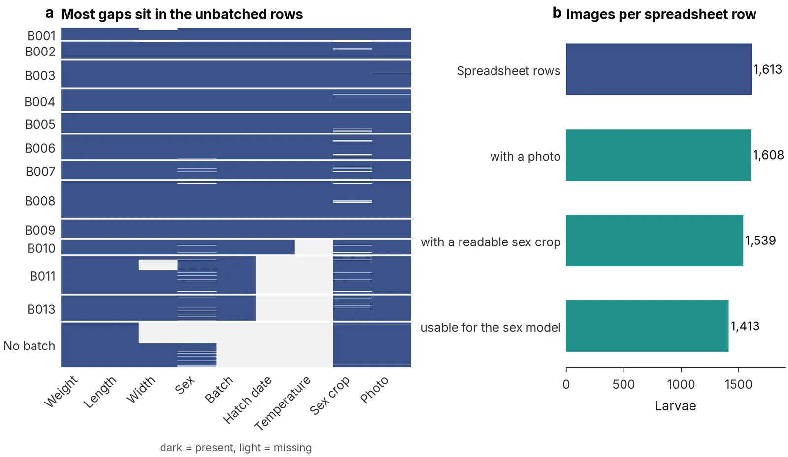
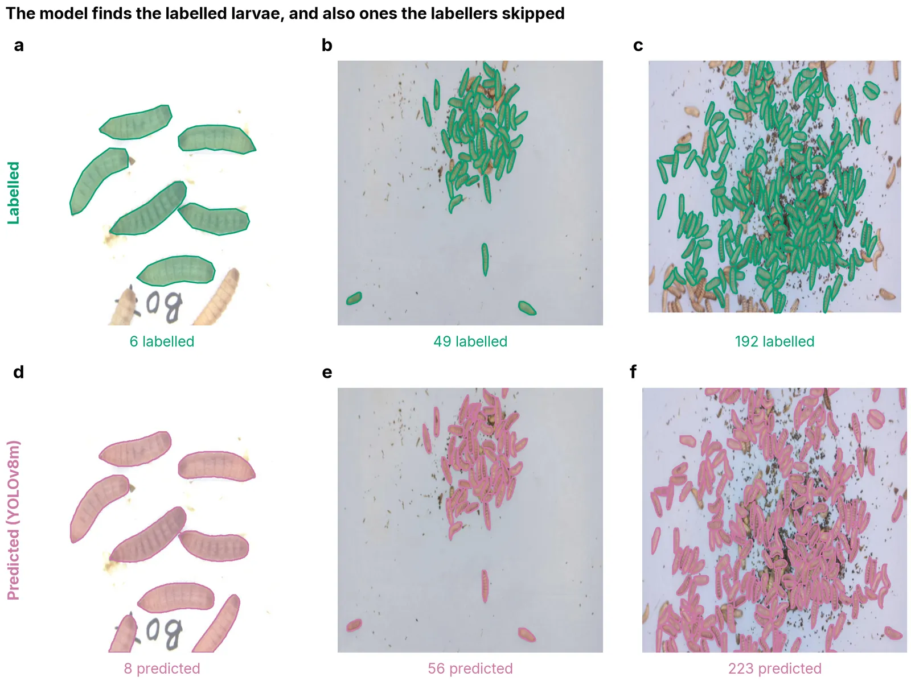
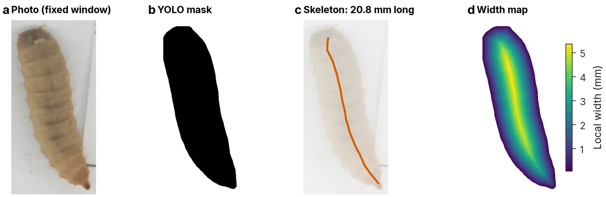
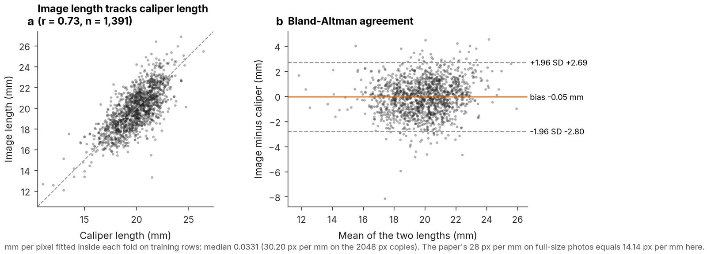
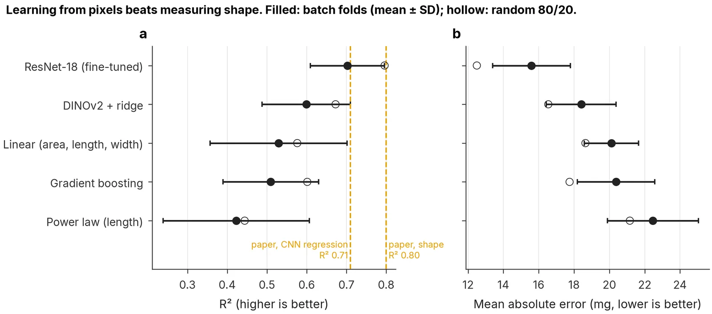
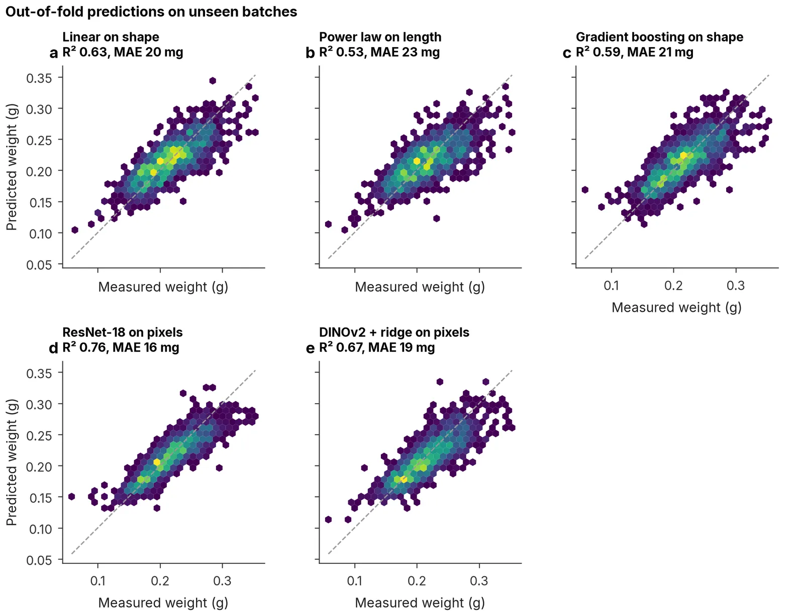
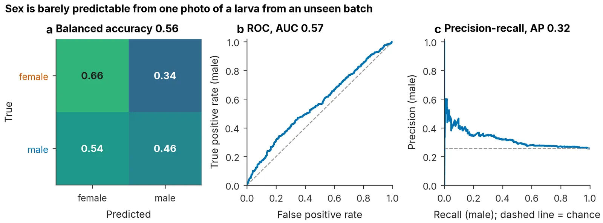
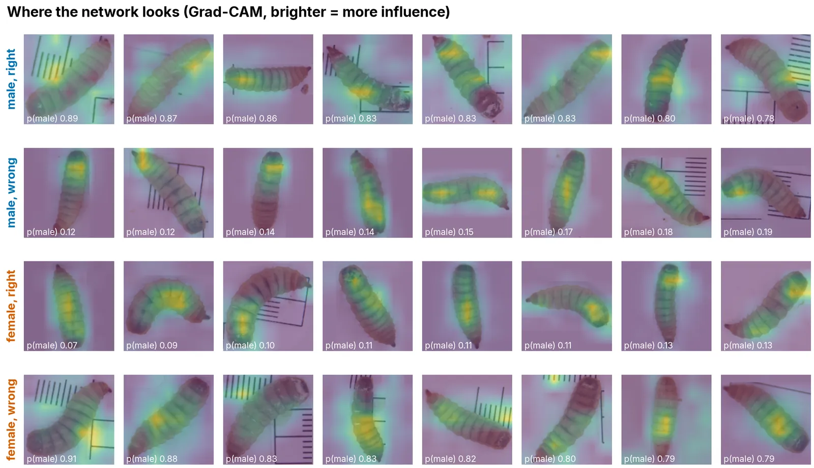

Projects / LarvaLens
Completed Released v1.0.1LarvaLens
From photos to phenotypes: counting, measuring, weighing and sexing black soldier fly larvae with computer vision, and checking whether the published results hold for rearing batches a model has never seen.

Why this project
Black soldier fly larvae turn food waste into protein for animal feed, and insect farms need to know how big, how heavy and which sex their larvae are. In 2025 a team at Aarhus University showed how a camera could do this and released their photos and measurements.
My thesis estimates cattle weight from photos, and the steps are the same: find the animal, outline it, measure it, predict its weight. This open dataset let me build that whole pipeline in public and ask one question the paper left open: do the results hold for larvae from a batch the model has never seen?
What I did differently
- Testing: whole rearing batches held out (5-fold, grouped by batch), plus the paper's random split for comparison.
- Detection test set: split by source photo, because the 321 images are augmented copies of 185 photos.
- Weight from pixels: one fixed window for every larva, so the network sees true size.
- Sex: all usable crops with class weights and balanced accuracy, instead of a cut-down subset.
- Audit first: two class IDs that both mean "larva", 36 sex-crop files that are not images, and two larva IDs with two different crops, all listed in the data card.
Results
| Task | Model | Unseen batches | Random split | Paper (random split) |
|---|---|---|---|---|
| Find and outline larvae (mask AP50) | YOLOv8m-seg | n/a | 0.89 (photo-grouped) | 0.93 |
| Weight from pixels (R²) | ResNet-18, fine-tuned | 0.70 ± 0.09 | 0.80 | 0.71 |
| Weight from shape (R²) | Linear on area, length, width | 0.53 ± 0.17 | 0.58 | 0.80 |
| Sex (balanced accuracy) | ResNet-18, class weights | 0.56 | 0.56 | 74% accuracy, balanced subset |
- Weight is best learned straight from the photo. The network still reaches R² 0.70 on batches it never saw.
- Measuring shape and converting it to weight works less well than reported. Image length agrees with caliper length only at r = 0.73, because larvae stretch and contract.
- Sex is barely visible in a single photo. Once tested honestly, the network finds no reliable cue (ROC-AUC 0.57). A negative result, reported as one.
Figures
Click any figure to enlarge it. Use the arrow keys to move between them.








Photos and measurements: Geissmann, Q. (2024), Black soldier fly larvae dataset, Zenodo, doi:10.5281/zenodo.13359376, CC BY 4.0, from the study of Nawoya et al. (2025). Figures are my own analysis.
A look at the code
Short excerpts from the repository. The rest, with tests, is on GitHub.
Whole rearing batches go to one fold, and each temperature group is spread across folds, so every fold is a fair test.
def assign_batch_folds(batches: pd.DataFrame, n_folds: int = 5, seed: int = 42) -> dict[str, int]:
"""Assign whole batches to folds, spreading each temperature group across folds."""
rng = np.random.default_rng(seed)
order = batches.assign(tiebreak=rng.random(len(batches)))
group_size = order.groupby("temp_group")["batch"].transform("count")
order = order.assign(group_size=group_size).sort_values(
["group_size", "temp_group", "n", "tiebreak"], ascending=[False, True, False, True]
)
rows = np.zeros(n_folds)
per_group: dict[str, np.ndarray] = {}
out: dict[str, int] = {}
for rec in order.itertuples(index=False):
counts = per_group.setdefault(rec.temp_group, np.zeros(n_folds))
noise = rng.random(n_folds) * 1e-6
fold = int(np.lexsort((noise, rows, counts))[0])
out[rec.batch] = fold
counts[fold] += 1
rows[fold] += rec.n
return outThe detection images include augmented copies of one photo. Grouping by source photo keeps copies of the same photo out of the test set.
ROBOFLOW_RE = re.compile(r"_(?:jpg|png|jpeg)\.rf\.[0-9a-f]+$", re.IGNORECASE)
def source_photo(filename: str) -> str:
"""Strip the Roboflow suffix so augmented copies share one source name."""
stem = filename.rsplit(".", 1)[0]
return ROBOFLOW_RE.sub("", stem)
def make_detect_split(
filenames: list[str], fractions: tuple[float, float, float] = (0.7, 0.15, 0.15), seed: int = 42
) -> pd.DataFrame:
"""Split detection images into train, val and test, grouped by source photo."""
df = pd.DataFrame({"image": sorted(filenames)})
df["source"] = df["image"].map(source_photo)
sources = np.array(sorted(df["source"].unique()))
rng = np.random.default_rng(seed)
rng.shuffle(sources)
# ... train, val and test are then assigned per source photo, never per imageLength follows the skeleton's longest path and adds the edge distance at both tips, because thinning stops about half a body width short of each end.
dt = ndimage.distance_transform_edt(mask)
path = longest_skeleton_path(skeletonize(mask))
ends = path[[0, -1]].round().astype(int)
tips = float(dt[ends[0][0], ends[0][1]] + dt[ends[1][0], ends[1][1]])
length = path_length(path) + tips
idx = path.round().astype(int)
radius = dt[idx[:, 0], idx[:, 1]]
q = len(radius) // 4
middle = radius[q : len(radius) - q] if len(radius) >= 4 else radius
out = Measurements(
area_px=float(mask.sum()),
perimeter_px=perimeter(mask),
length_px=length,
width_max_px=float(2 * dt.max()),
width_mid_px=float(2 * middle.mean()),
)Cite this software
If you use LarvaLens, please also cite the dataset (Geissmann, 2024) and the paper it builds on (Nawoya et al., 2025).
Plain-text reference.
Patwary, M. R. (2026). LarvaLens: counting, measuring, weighing and sexing black soldier fly larvae with computer vision (Version 1.0.1) [Computer software]. Zenodo. https://doi.org/10.5281/zenodo.23325495For LaTeX and reference managers.
@software{patwary_larvalens_2026,
author = {Patwary, Md Raihan},
title = {{LarvaLens: counting, measuring, weighing and sexing
black soldier fly larvae with computer vision}},
year = {2026},
version = {1.0.1},
publisher = {Zenodo},
doi = {10.5281/zenodo.23325495},
url = {https://github.com/raihan-patwary/larvalens}
}